Menu barbok'you

Les Sacs à dos
| Niveau 1 | Petit Sac en Laine de Boufton | |||
|---|---|---|---|---|
| # | Recettes : | Caractéristiques : | Conditions : | |
| 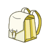 | 10x Laine de Boufton Blanc 10x Laine de Boufton Noir |
Pods : +51 à 100 |
||
| Description : Ce petit sac ne fera pas de vous une célébrité, mais il aura au moins le mérite de vous permettre de ranger quelques effets personnels. | ||||
| Niveau 1 | Sakananas | |||
|---|---|---|---|---|
| # | Recettes : | Caractéristiques : | Conditions : | |
| 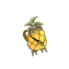 | Pods : +201 à 400 |
|||
| Description : Ce sac ressemble à s'y méprendre à un ananas magique, peut-être parce qu'il s'agit d'un ananas magique transformé en sac pour des raisons qui restent encore inconnues. Contrairement au sac Cawotte, le Sakananas n'est pas vidé, vous ne pouvez donc rien y mettre, et il est en permanence très lourd, un peu comme votre ami Iop perdu depuis plusieurs mois dans la taverne d'Astrub. Contrairement aux apparences, ce sac ne fait pas partie de la célèbre panoplie Ananas. On vous a une fois de plus menti. | ||||
| Niveau 5 | Sac du Petit Récolteur | |||
|---|---|---|---|---|
| # | Recettes : | Caractéristiques : | Conditions : | |
| 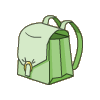 | 5x Plumes de Tofu 20x Laine de Boufton Blanc |
Pods : +151 à 250 |
Métier > Bûcheron (20) Métier > Mineur (20) Métier > Pêcheur (20) Métier > Paysan (20) Métier > Alchimiste (20) Métier > Chasseur (20) |
|
| Description : Ce sac est spécialement étudié pour contenir quelques ressources collectables. Seuls les vrais collecteurs sont à même de pouvoir le porter. (niveau 20 de collecteur requis). |
||||
| Niveau 10 | Sac du Petit Aventurier | |||
|---|---|---|---|---|
| # | Recettes : | Caractéristiques : | Conditions : | |
| 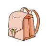 | 18x Poils du Sanglier 18x Laine de Boufton Blanc 18x Laine de Boufton Noir |
Pods : +151 à 200 |
||
| Description : Ce sac est destiné à ceux qui ne partent pas trop loin de chez eux, et ont besoin d'emmener des choses pas importantes du tout, comme des Planches de Frêne par exemple. | ||||
| Niveau 15 | Sac du Récolteur | |||
|---|---|---|---|---|
| # | Recettes : | Caractéristiques : | Conditions : | |
| 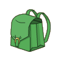 | 25x Laine de Boufton Blanc 10x Poils de Black Tiwabbit 25x Laine de Boufton Noir |
Pods : +251 à 400 |
Métier > Bûcheron (40) Métier > Mineur (40) Métier > Pêcheur (40) Métier > Paysan (40) Métier > Alchimiste (40) Métier > Chasseur (40) |
|
| Description : Ce sac est spécialement étudié pour contenir des ressources collectables. Seuls les vrais collecteurs sont à même de pouvoir le porter. (niveau 40 de collecteur requis). |
||||
| Niveau 16 | Sac du Petit Moskito | |||
|---|---|---|---|---|
| # | Recettes : | Caractéristiques : | Conditions : | |
| 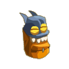 | 18x Ailes de Moskito 20x Poudre de Perlinpainpain 15x Sourcil de Moskito |
Chance : 1 à 30 Pods : +1 à 100 |
||
| Description : Ce sac en peau et en ailes de Moskitos faisait jadis fureur à la sortie des écoles. Aujourd'hui, il est totalement démodé, et a été remplacé dans le coeur des enfants, par le Petit sac d'écolier du Chef Crocodaille. Du grand n'importe quoi, quand on voit que ce dernier est largement plus cher, et surtout beaucoup plus laid. Une sombre histoire de mode. | ||||
| Niveau 19 | Sac du Paysan | |||
|---|---|---|---|---|
| # | Recettes : | Caractéristiques : | Conditions : | |
| 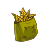 | 20x Seigle 10x Tige de Pissenlit Diabolique 3x Bave de Rose Démoniaque |
Chance : 6 à 10 Pods : +101 à 200 |
||
| Description : Ce sac très en vogue chez les jeunes écoliers, est idéal pour entreposer des farines animales et végétales. Une fois ouvert, puis déplié et déchiré le long des coutures, il pourra vous servir de jupe si vous n'avez pas peur de montrer vos cuisses velues. | ||||
| Niveau 20 | Sac du Grand Récolteur | |||
|---|---|---|---|---|
| # | Recettes : | Caractéristiques : | Conditions : | |
| 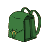 | 20x Laine de Bouftou 2x Laine du Chef de Guerre Bouftou 2x Poils de Barbe du Grand Pa Wabbit 2x Poils de Barbe du Bwork Mage 20x Plumes de Tofu |
Pods : +601 à 800 |
Métier > Bûcheron (60) Métier > Mineur (60) Métier > Pêcheur (60) Métier > Paysan (60) Métier > Alchimiste (60) Métier > Chasseur (60) |
|
| Description : Ce sac est spécialement étudié pour contenir de nombreuses ressources collectables. Seuls les vrais collecteurs sont à même de pouvoir le porter. (niveau 60 de collecteur requis). |
||||
| Niveau 20 | Sac du Staca Noviste | |||
|---|---|---|---|---|
| # | Recettes : | Caractéristiques : | Conditions : | |
| 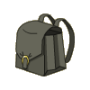 | 4x Plume Pointue de Kwak du Vent 4x Plume du Kwak de Flamme 2x Poils du Milimulou 2x Poils de Wo Wabbit 1x Etoffe du Mulou 2x Poils de Barbe du Grand Pa Wabbit |
Pods : +1001 à 1500 |
Métier > Bûcheron (90) Métier > Mineur (90) Métier > Pêcheur (90) Métier > Paysan (90) Métier > Alchimiste (90) Métier > Chasseur (90) |
|
| Description : On raconte qu'un Mineur célèbre était capable de miner sans arrêt pendant des mois dans 4 mines différentes en même temps. Il s'agit en fait d'une légende inventée par la guilde du Marteau-Faucille pour inciter ses mineurs à récolter plus. | ||||
| Niveau 27 | Larvasac | |||
|---|---|---|---|---|
| # | Recettes : | Caractéristiques : | Conditions : | |
| 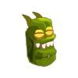 | 14x Peau de Larve Verte 15x Peau de Larve Bleue 17x Peau de Larve Orange 1x Petite Perle Dorée |
Vitalité : 6 à 20 +1 à 2 de dommages |
||
| Description : Ce sac original mais sans fioritures était très en vogue il y a bien longtemps. Un exemple typique du mauvais goût de vos ancêtres. | ||||
| Niveau 38 | Sac de Bouba le Prophète | |||
|---|---|---|---|---|
| # | Recettes : | Caractéristiques : | Conditions : | |
| 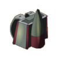 | Force : 21 à 30 Vitalité : 11 à 20 Portée : +1 |
|||
| Description : Bouba a toujours prétendu être un prophète, porteur d'un message qu'il a fini par lui-même oublier. reconverti pendant plusieurs années comme chasseur de primes, il a terminé sa triste carrière, digéré dans le ventre d'une créature des sables. | ||||
| Niveau 40 | Sac de l'Aventurier | |||
|---|---|---|---|---|
| # | Recettes : | Caractéristiques : | Conditions : | |
| 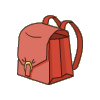 | 1x Plume du Kwak de Terre 1x Plume du Kwak de Vent 1x Poils de Barbe du Grand Pa Wabbit 1x Poils du Sanglier |
Pods : +251 à 300 |
||
| Description : C'est le sac idéal pour ranger tous vos pains et potions lorsque vous partez pour plusieurs mois, dans le labyrinthe par exemple. | ||||
| Niveau 60 | Sac-Cawotte | |||
|---|---|---|---|---|
| # | Recettes : | Caractéristiques : | Conditions : | |
| 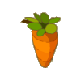 | 10x Cawotte 10x Poils de Wo Wabbit 12x Poils de Black Tiwabbit 26x Bandeau du Black Tiwabbit 5x Poils de Barbe du Grand Pa Wabbit 35x Poils de Wabbit |
Pods : +501 à 1000 Résistance : 3 à 5% (eau) Résistance : 3 à 5% (terre) |
||
| Description : Avec ce sac sur les épaules, vous pouvez partir à l'aventure sans vous soucier des problèmes alimentaires. En effet, même si la Cawotte est vide comme un crâne de Iop, les feuilles du dessus repoussent toutes seules, de quoi se faire de bonnes tisanes. | ||||
| Niveau 60 | Sac du grand aventurier | |||
|---|---|---|---|---|
| # | Recettes : | Caractéristiques : | Conditions : | |
| 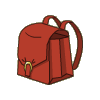 | 21x Ongle de Kanigrou 4x Etoffe de Kanigrou 11x Oreille de Kanigrou 27x Poil de Kanigrou 12x Peau de Kanigrou 8x Ecaille de Crocodaille |
Pods : +501 à 1000 |
||
| Description : C'est le sac idéal pour ranger tous vos pains et potions lorsque vous partez en voyage vers des destinations exotiques, comme l'île de Moon. | ||||
| Niveau 69 | Sac du Koulosse | |||
|---|---|---|---|---|
| # | Recettes : | Caractéristiques : | Conditions : | |
| 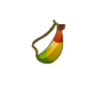 | Vitalité : 95 +6 de dommages Pods : +114 Résistance : 3 (eau) Résistance : 1 (terre) Force : -40 Intelligence : -79 Agilité : -62 Chance : -30 |
|||
| Description : Ce sac permet au Koulosse de garder au frais ses feuilles de Kaliptus ou d'étouffer les Koalaks un peu trop entreprenants. | ||||
| Niveau 70 | Petit sac d'écolier du Chef Crocodaille | |||
|---|---|---|---|---|
| # | Recettes : | Caractéristiques : | Conditions : | |
| 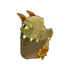 | 30x Ecaille de Chef Crocodaille 30x Ecaille de Crocodaille 1x Peau de Chef Crocodaille 1x Peau de Crocodaille 12x Poil d'Ouginak 12x Poil de Kanigrou |
Vitalité : 21 à 30 Sagesse : 16 à 20 Agilité : 21 à 30 Coup critiques : +1 à 2 Pods : +301 à 350 Résistance : 3 à 5% (feu) Résistance : 3 à 5% (eau) |
||
| Description : A Amakna aussi, la rentrée scolaire est une épreuve douloureuse pour les jeunes enfants. Surtout pour les jeunes Iops, pour qui la rentrée des classes est synonyme de véritable calvaire, parsemé d'épreuves insurmontables. Réconfortez-les avec ce magnifique sac d'écolier en peau et en écailles de Chef Crocodaille, et rembourré d'une multitude de poils. | ||||
Dofus est un MMORPG édité par Ankama." Barbok " est un site non-officiel sans aucun lien avec Ankama.
Toutes les illustrations sont la propriété d'Ankama Studio et de Dofus. Le contenu de ce site a été rédigé initialement par Immortal, il ne s'agit que d'une remise en ligne effectuée par Eternal Games.